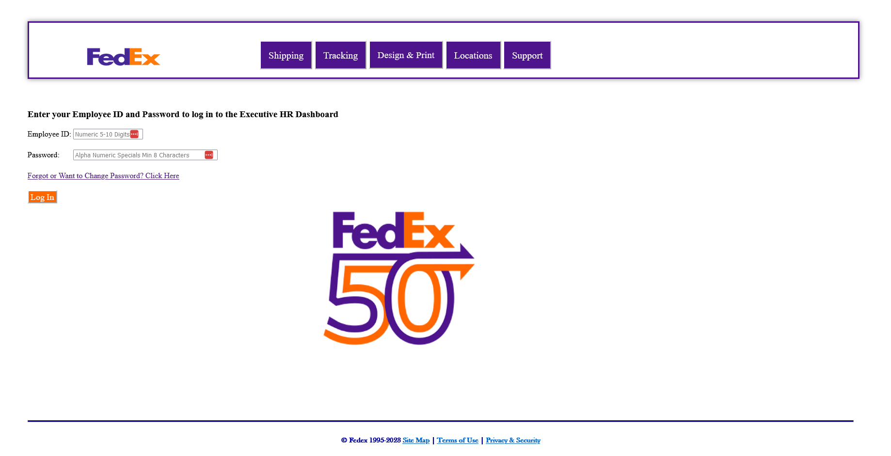

Here's where you'll find a selection of some of the projects I worked on over the course of my degree that demonstrate my business analysis and information systems skills. There will be a description of the assignment as well as a summary of how it was fulfilled.
To preview each project, I posted a couple of screenshots; however, each entry has a PDF file that contains more images showcase the projecting and its features
Additionally, certain entries have links to my GitHub if you're interesting in seeing the code that brought it to life.
This was the final project for my degree. The entire purpose of the project was to combine and utilize many of the major skills and processes from throughout my college education and apply it in a real-world project.
In this case, myself and two other classmates worked with a client from FedEx to create an executive portal. Managers, directors, Vice Presidents, and Senior Vice Presidents could log into the portal and be taken to their own dashboard that showed data on their employees. VPs and SVPs, additionally, would be able to calculate severance.
Initially provided a .csv file by the client of all the necessary employee data, we created a database using MySQL which were then put into PowerBI to create visualizations for each dashboard. The portal website itself was built using HTML and PHP which incorporated both the MySQL database to check credentials as well as PowerBI to display data for the executive.
We included several features to ensure data integrity and security. One such feature was password reset. When logging in for the first time using a generic, one-time password, users would immediately be directed to a form to set a new password which adhered to certain stated parameters. We also placed the ability to add and remove employees as well as change data only in the hands of the system administrator who had their own login to the portal. The email for the sys-admin was included in the footer for users to submit change requests.
After presenting 2 prototypes and dedicating 5 months of tirelessly researching and refining it, my teammates and I were very proud of our final deliverable and pleased to see the client and professor were proud of our efforts.
GitHub
PDF File


Website with Search Capabilities
Throughout my Programming Web-Based Systems course, I learned how to code HTML, CSS, and PHP to create a website. While submitting smaller projects as checkpoints and homework during the semester, our final project was to build a website that incorporated everything we were taught. One such element was to connect to a MySQL database to be able to search within the website.
For my website, I decided to dedicate it to something I was both familiar with and passionate about: Spirit Halloween. Specifically, I wanted to build a website that served as a database for similarly passionate fans to visit, search the database for information about the company's many animatronic decorations, and read interesting facts and trivia about them.
This was a project I thoroughly enjoyed working on not just because I was passionate about the subject matter but I also loved creating and working with the programming languages. I intend on revisiting and expanding on it one of these days, but I'm keeping it on the back-burner for now. With what I've created so far, I'm very proud with how it turned out.
GitHub
PDF File


Small Business Data Dashboards
In the summer of 2023, after graduating from college, I was recruited by a local business owner I met through a family connection. They were wanting some business analysis performed on their company to understand what products and services were the best-selling and most profitable per quarter in 2023.
After being given the log-in to their Square site, I generated reports on the sales for each category they specifically wanted, exported it, and then sorted and filtered the data in Excel to make it more concise and manageable. Using the profit margins they provided for me, I was able to calculate how much profit they made on each purchase before adding the total profit of each category's sales for each quarter.
Once I had finished with the data in Excel and calculating the profits, I uploaded the file into Power BI where I proceeded to create visualizations that represent the data. After testing and playing around with different graphs and settings, I finally completed the dashboard that clearly depicted the trends for profitability throughout each quarter by category. It also allowed the owners to filter the dashboard to view specific a specific quarter and/or category.
Upon presenting the final product to the owner, they were very pleased. They were happy with the layout and features of the dashboard as well as excited to be able to see how their company's performing and being able to make appropriate changes. I'm continuing to work with them on analyzing their data and creating visualizations for specific aspects of their company and performance.
This project provided an invaluable opportunity for me to put my business analysis education and interest to use and reaffirmed why it's a field I'm pursuing as a career. I had a lot of fun working with the data, creating the visualizations, and reaching conclusions as a result.
And, yes, I did get their permission to use these screenshots for this purpose.
PDF File

While in the process of job-hunting, I kept trying to figure out ways to best advertise myself, my experience, and skills. I decided to put my web-based programming skills to use and create a website. My goal with this site was to create a one-stop-shop for any recruiters, prospective employers, and anybody who's curious wanting to know who I am, what experience I have, and what I have to offer.
Through the use of Notepad ++, Apache, HTML, PHP, and CSS, I built this website from scratch. When formatting it, I ensured this site would be as concise and simplistic yet visually pleasing. I wanted to ensure I touched on and explored all of my work experience as well as projects and classes that best illustrate my skills in Information Systems and Business Analysis.
What originally began as a way to advertise myself and my experience quickly became a passion project the more it developed. The black and gold color-scheme was based off that of my alma mater, UCCS, and the background image of Pikes Peak was one I took. It's a gorgeous view that's greeted me every day during my commute to school since Preschool.
I'm pleased with how this project turned out and how it communicates what I have to offer. I hope you've had as much fun viewing and interacting with it as I have had building it.
If you're interested in checking out the code, all of the files are over on my GitHub which is linked below.
GitHub